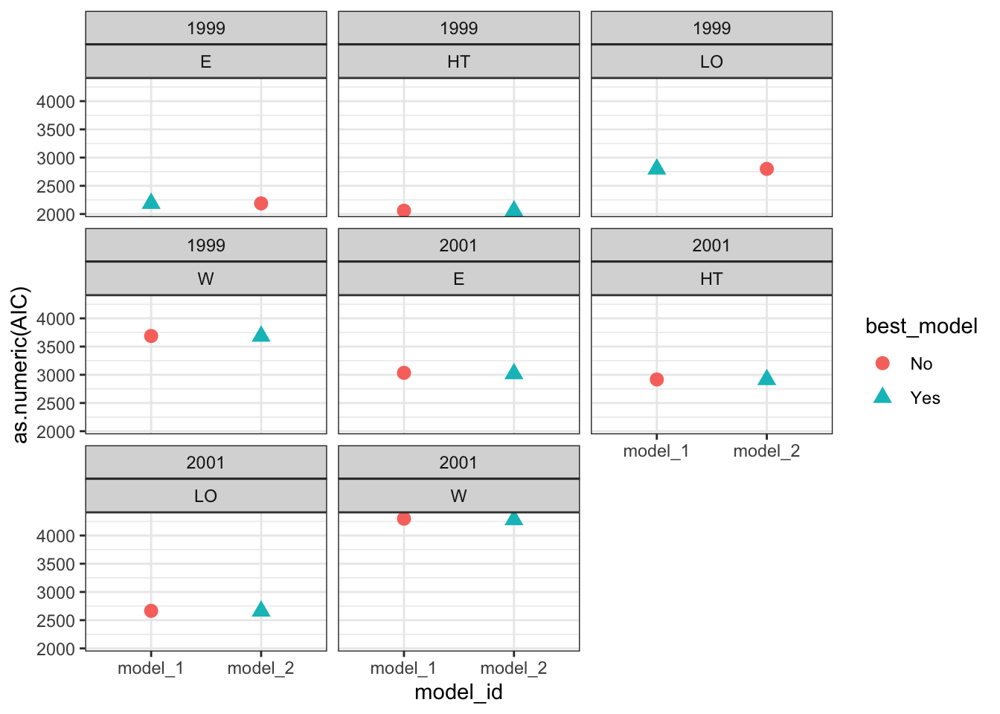

library(pacman) # to install and load packages faster
p_load(dplyr, tidyr) # data wrangling
p_load(purrr) # iteration mapping
p_load(ggplot2) # plots
p_load(agridat) # data
p_load(nlme, broom.mixed, car, performance) # mixed models work
p_load(emmeans, multcomp, multcompView) # multiple comparisonsIteration in R: The Power of purrr
iteration
purrr
functional programming
case study
Description
This lesson explores iteration in R, focusing on the power of the purrr package for functional programming. We’ll compare traditional for loops with purrr’s map() functions to illustrate more efficient and readable approaches to iteration.

Required packages for today
1 Introduction to Iteration
Iteration is a common programming task, typically used to apply a function over elements of a dataset. In R, this can be achieved using:
- For loops (Base R approach)
apply()family functionspurrrpackage (Functional programming approach)
2 Traditional for Loop Example
The for loop is a straightforward way to iterate over a sequence:
numbers <- c(1, 2, 3, 4, 5)
results <- numeric(length(numbers))
for (i in seq_along(numbers)) {
results[i] <- numbers[i]^2
}
results[1] 1 4 9 16 253 Using purrr::map() for Iteration
With purrr, we can achieve the same result in a more elegant and functional style:
# Let's just square the numbers
list_output <- map(numbers, ~ .x^2) # Returns a list
numeric_output <- map_dbl(numbers, ~ .x^2) # Returns a numeric vector
list_output # List format[[1]]
[1] 1
[[2]]
[1] 4
[[3]]
[1] 9
[[4]]
[1] 16
[[5]]
[1] 25numeric_output # Numeric vector format[1] 1 4 9 16 254 Comparison of For Loops and Mapping Functions
| Feature | For Loops | Mapping Functions (purrr) |
|---|---|---|
| Ease of Use | Straightforward for simple tasks | More concise, but requires learning purrr syntax |
| Readability | Can become messy with nested loops | Cleaner and more functional style |
| Speed | Generally slower for large datasets | Often faster, especially with parallelization options |
| Scalability | Less scalable, more prone to errors | Highly scalable, especially with complex data structures |
4.1 Understanding the Difference Between map() and map_dbl()
map_dbl()guarantees that the output is a numeric vector.
- Similarly:
map_chr()returns a character vector.map_lgl()produces a logical vector.map_int()yields an integer vector.
map(), the most general form, returns a list by default.
These functions are part of an iterative approach where a function is mapped over elements of a list or vector.
5 Using the purrr Package for Iteration
The purrr package provides several mapping functions to facilitate iteration:
map(x, f): Applies a functionfto each element ofx.map2(x, y, f): Applies a functionfto corresponding elements ofxandy.pmap(list, f): Applies a functionfto multiple arguments provided as a list of vectors or data frames.
5.1 Practical Application
A common workflow involves combining group_by() and nest() to create nested data frames for iteration. You can then use mutate() along with map() to apply a function to each nested data frame:
library(dplyr)
library(purrr)
library(tidyr)
data %>%
group_by(group_variable) %>%
nest() %>%
mutate(results = map(data, your_function))This approach is very powerful for applying custom functions to subsets of data efficiently.
Let’s see that in practice…
6 Working with the agridat Dataset
We will use the lasrosas.corn dataset from agridat to demonstrate iteration over data frames.
6.1 Load the data
data_corn_00 <- agridat::lasrosas.corn
head(data_corn_00) year lat long yield nitro topo bv rep nf
1 1999 -33.05113 -63.84886 72.14 131.5 W 162.60 R1 N5
2 1999 -33.05115 -63.84879 73.79 131.5 W 170.49 R1 N5
3 1999 -33.05116 -63.84872 77.25 131.5 W 168.39 R1 N5
4 1999 -33.05117 -63.84865 76.35 131.5 W 176.68 R1 N5
5 1999 -33.05118 -63.84858 75.55 131.5 W 171.46 R1 N5
6 1999 -33.05120 -63.84851 70.24 131.5 W 170.56 R1 N56.2 Prepare the data
data_corn_01 <- data_corn_00 %>%
# Select only necessary variables
dplyr::select(year, topo, rep, nf, yield) %>%
# Group by
group_by(year, topo) %>%
# Create nested data frames
nest(my_data = c(rep, nf, yield))6.3 Create functions
6.3.1 Rep (block) as fixed
# SIMPLEST MODEL
fit_block_fixed <- function(x){
lm(# Response variable
yield ~
# Fixed (treatment)
nf +
# Block as fixed too
rep,
# Data
data = x)
}6.3.2 Rep (block) as random
# RANDOM BLOCK (mixed model)
fit_block_random <- function(x){
nlme::lme(# Response variable
yield ~
# Fixed
nf,
# Random
random = ~1|rep,
# Data
data = x)
}6.4 Fit models with mapping
models <- data_corn_01 %>%
# BLOCK as FIXED
mutate(model_1 = map(my_data, fit_block_fixed)) %>%
# BLOCK as RANDOM
mutate(model_2 = map(my_data, fit_block_random)) %>%
# Data wrangling
pivot_longer(cols = c(model_1:model_2), # show alternative 'contains' model
names_to = "model_id",
values_to = "model") %>%
# Map over model column
mutate(results = map(model, broom.mixed::augment )) %>%
# Performance
mutate(performance = map(model, broom.mixed::glance )) %>%
# Extract AIC
mutate(AIC = map(performance, ~.x$AIC)) %>%
ungroup()6.5 Model selection
Compare models performance
# Visual model selection
best_models <-
models %>%
group_by(year, topo) %>%
# Use case_when to identify the best model
mutate(best_model =
case_when(AIC == min(as.numeric(AIC)) ~ "Yes",
TRUE ~ "No")) %>%
ungroup()
# Plot
best_models %>%
ggplot()+
geom_point(aes(x = model_id, y = as.numeric(AIC),
color = best_model, shape = best_model),
size = 3)+
facet_wrap(year~topo)+
theme_bw()
# Final models
selected_models <- best_models %>% dplyr::filter(best_model == "Yes")6.6 Run ANOVA
Estimate the effects of factor under study
models_effects <-
selected_models %>%
# Type 3 Sum of Squares (Partial SS, when interactions are present)
mutate(ANOVA = map(model, ~Anova(., type = 3)) )
# Extract ANOVAS
models_effects$ANOVA[[1]]Analysis of Deviance Table (Type III tests)
Response: yield
Chisq Df Pr(>Chisq)
(Intercept) 5729.92 1 < 2.2e-16 ***
nf 164.03 5 < 2.2e-16 ***
---
Signif. codes: 0 '***' 0.001 '**' 0.01 '*' 0.05 '.' 0.1 ' ' 1models_effects$ANOVA[[2]]Analysis of Deviance Table (Type III tests)
Response: yield
Chisq Df Pr(>Chisq)
(Intercept) 6089.64 1 < 2.2e-16 ***
nf 318.03 5 < 2.2e-16 ***
---
Signif. codes: 0 '***' 0.001 '**' 0.01 '*' 0.05 '.' 0.1 ' ' 1models_effects$ANOVA[[3]]Anova Table (Type III tests)
Response: yield
Sum Sq Df F value Pr(>F)
(Intercept) 158985 1 7299.604 < 2.2e-16 ***
nf 1975 5 18.136 4.699e-16 ***
rep 691 2 15.858 2.509e-07 ***
Residuals 7841 360
---
Signif. codes: 0 '***' 0.001 '**' 0.01 '*' 0.05 '.' 0.1 ' ' 1models_effects$ANOVA[[8]]Analysis of Deviance Table (Type III tests)
Response: yield
Chisq Df Pr(>Chisq)
(Intercept) 18282.200 1 < 2.2e-16 ***
nf 72.431 5 3.194e-14 ***
---
Signif. codes: 0 '***' 0.001 '**' 0.01 '*' 0.05 '.' 0.1 ' ' 16.7 Means comparison
# MULTCOMPARISON
# emmeans and cld multcomp
# We need to specify ourselves the most important interaction to perform the comparisons
mult_comp <-
models_effects %>%
# Comparisons estimates (emmeans)
mutate(mc_estimates = map(model, ~emmeans(., ~ nf))) %>%
# Assign letters and p-value adjustment (multcomp)
mutate(mc_letters =
map(mc_estimates,
~as.data.frame(
# By specifies a strata or level to assign the letters
cld(., decreasing = TRUE, details=FALSE,
reversed=TRUE, alpha=0.05, adjust = "tukey", Letters=LETTERS))))Note: adjust = "tukey" was changed to "sidak"
because "tukey" is only appropriate for one set of pairwise comparisons
Note: adjust = "tukey" was changed to "sidak"
because "tukey" is only appropriate for one set of pairwise comparisons
Note: adjust = "tukey" was changed to "sidak"
because "tukey" is only appropriate for one set of pairwise comparisons
Note: adjust = "tukey" was changed to "sidak"
because "tukey" is only appropriate for one set of pairwise comparisons
Note: adjust = "tukey" was changed to "sidak"
because "tukey" is only appropriate for one set of pairwise comparisons
Note: adjust = "tukey" was changed to "sidak"
because "tukey" is only appropriate for one set of pairwise comparisons
Note: adjust = "tukey" was changed to "sidak"
because "tukey" is only appropriate for one set of pairwise comparisons
Note: adjust = "tukey" was changed to "sidak"
because "tukey" is only appropriate for one set of pairwise comparisons7 Conclusion
Iteration is a fundamental skill in data science, and purrr provides an expressive, efficient, and tidy approach to iteration. By using map(), map2(), and pmap(), we can iterate over multiple variables seamlessly, avoiding verbose loops while improving readability and maintainability.
7.0.1 Further Resources
- R for Data Science - Iteration
- purrr Package Documentation
- Functional Programming in R
- agridat Package Documentation
Happy coding!